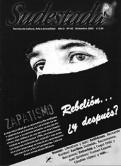

Buscar
Truman Capote: Sangre, sudor y lágrimas
A sangre fría no sólo es uno de los mayores exponentes del género de no-ficción, sino también la obra más conocida de Truman Capote. La íntima y ambivalente relación que éste entabló con los asesinos lo puso en contacto con su parte más oscura, hundiéndolo en un pozo del que no pudo salir jamás.
Edición N° 45
Diciembre 2005
Revista bimensual
Comprar edición impresaSumario
- Zapatismo: La rebelión del erizo
- ¿Seguimos? Seguimos
- Truman Capote: Sangre, sudor y lágrimas
- Guillermo Saccomanno: La espera de una ola
- Jazz y literatura: Alrededor de otras medianoches
- Bernardo Kordon: El escritor que murió dos veces
- ¡Degenerados asesinaron y mutilaron a vespertino!
- Canciones que se quedan: nuevos referentes de la música popular argentina
Compartir Articulo
En ese momento, ni un alma los oyó en el pueblo dormido..., cuatro disparos que, en total, terminaron con seis vidas humanas.
Truman Capote, A sangre fría
El 14 de noviembre de 1959, apenas pasada la medianoche, un Chevrolet negro estacionó a pocos metros de la entrada de una finca en Holcomb, un pequeño pueblo de Kansas. Descendieron de él dos hombres armados que ingresaron a la casa por una puerta que no tenía llave. Buscaban una caja fuerte con 10 mil dólares. Al no encontrarla, despertaron al dueño de casa, que les aseguró que tal caja no existía. Continuaron su búsqueda infructuosa hasta darse finalmente por vencidos. Se retiraron llevando consigo lo poco que encontraron -algo más de 40 dólares, una radio portátil y unos prismáticos-; no sin antes asesinar a toda la familia.
Dos días más tarde, en un departamento de la ciudad de Nueva York, un hombre hojeaba el New York Times mientras tomaba su desayuno. Escritor de profesión, sentía que debía dar un giro a su carrera, escribir hechos en lugar de ficciones. Buceaba por el periódico, buscando la clave que habría de garantizarle el éxito. Cuando llegó a la página 39 la encontró, bajo la forma de un titular: «Rico agricultor y tres miembros de su familia asesinados».
Sin perder tiempo, Truman Capote -el escritor en cuestión- se acercó a las oficinas de The New Yorker y le propuso su idea al director de la revista: viajar a Kansas y empaparse en el tema, para volver al poco tiempo con una nota sobre la vida de la familia asesinada y el efecto que semejante crimen había provocado en la comunidad. La propuesta fue aceptada y Capote partió inmediatamente rumbo a Kansas con su amiga Nelle Harper Lee para cubrir la historia.
Holcomb era un pueblito conservador y puritano -y por entonces, además, desconfiado y presa del espanto- y resulta fácil imaginar la reacción que una figura como la de Truman Capote provocó en sus pobladores. No por su fama, sino por su aspecto. Su blonda cabellera, su metro cincuenta y cinco, sus delicadas maneras, su preferencia por los trajes de terciopelo y, por sobre todas las cosas, su chillona vocecita, parecida a la de un niño de doce años, no lo convertían en un personaje popular por aquellos lugares. Fue Harper Lee -proveniente de un pequeño pueblo de similares características- quien trabó los primeros contactos y consiguió que Truman fuera finalmente aceptado.
La idea original de reconstruir la vida de los Clutter hasta el momento de sus asesinatos se vio modificada al producirse la detención de Dick Hickock y Perry Smith. En ese momento empezó a gestarse lo que terminaría siendo A sangre fría.
Un juego de espejos
Capote entabló una particular relación con los asesinos, a quienes visitaba a menudo en la prisión. Dick le parecía un simple ladronzuelo que había perdido el rumbo, un criminal como cualquier otro. Pero Perry era diferente. A simple vista mostraba una similitud con Truman: su excepcionalmente baja estatura. Pero los vínculos entre ambos no se detenían ahí. Los dos habían vivido una infancia desgraciada, con una madre alcóholica que abandonó a su marido sólo para morir, años más tarde, presa de su vicio. Ambos se vieron librados al azar, criados por terceros, sufriendo el desprecio de los otros por ser distintos (Perry tenía sangre india y problemas de incontinencia; Truman era notoriamente afeminado).
Al conocerse, ambos supieron ver en el otro aquello que habrían podido ser, si los hilos del destino se hubieran movido de un modo diferente. Capote veía en Smith su lado oscuro, las angustias, temores y rencores que se escondían en lo más profundo de su alma. Smith, por su parte, veía en Capote al artista exitoso que él hubiera podido llegar a ser si el mundo no hubiera complotado en su contra. Se necesitaban mutuamente: Truman a Perry para escribir su historia, y Perry a Truman porque era su único nexo con el mundo exterior, un oído siempre dispuesto a escucharlo. Perry actuaba como un hermano celoso, luchando por el amor del padre, cada vez que se enteraba que Dick recibía una carta de Capote. "Si tuvieses el más mínimo sentido, comprenderías que Truman piensa el doble en mí que en vos", solía decirle. Pero la relación entre el escritor y los condenados no era un lecho de rosas. Éstos estaban preocupados por la forma en que serían retratados en el libro. Al descubrir el título de la futura obra, Perry se mostró contrariado, ya que suponía que A sangre fría implicaba que los asesinatos habían sido planeados y llevados a cabo sin escrúpulos. La preocupación, si bien comprensible, no era del todo acertada. La novela no se refiere a cuatro, sino a seis asesinatos cometidos a sangre fría y, por momentos, parece preocuparse más en juzgar a las ejecuciones "legales" que a las otras.
La relación con los detenidos -que se extendió a lo largo de 6 años de apelaciones que iban aplazando las ejecuciones- le pesaba cada vez más al escritor. Además de la ambivalencia que sentía respecto a los condenados («no es que a mí me gustasen Perry y Dick. Es como decir: '¿Te gustas?' La cuestión estaba en que los conocía tan bien como me conozco a mí mismo»), se veía enfrentado a un fuerte dilema moral: sólo podría publicar el libro una vez que aquellos dos hombres, a los que tanto había llegado a conocer, hubieran sido ejecutados. Sobre el final buscaron la ayuda de Capote, pero él se negaba a atender el teléfono: lo último que quería era que el final siguiera dilatándose. Perry, confuso y decepcionado, comenzaba a sentirse engañado.
¿Un nuevo género?
El 14 de abril de 1965 marcó un final y un principio. En las primeras horas de ese día, Dick y Perry perdían la vida: morían las personas y nacían los personajes. Poco tiempo después, A sangre fría se publicó por entregas en The New Yorker y en enero de 1966 se editó en forma de libro. Capote decidió llamar a su creación "novela de no ficción", asegurando que había inventado un nuevo género, que consistía en novelar hechos reales. Una fuerte polémica se levantó en torno a esta afirmación. Uno de sus principales detractores fue Norman Mailer, quien decía que el libro de Capote era "un fracaso de la imaginación".
La nota completa en la edición gráfica de Sudestada N°45)
Comentarios
Anabella Castro Avelleyra
Articulos más vistos


LIBRERÍA SUDESTADA

Colección infantil

Distribuidora de Libros

Suscripción

Sudestada en URUGUAY

Otros articulos de esta edición
 Nota de tapa
Nota de tapa
Zapatismo: La rebelión del erizo
Casi doce años han pasado desde la insurrección indígena y campesina en Chiapas y muchas cosas han cambiado. Nuevas prácticas ...
 Antihéroes
Antihéroes
Bernardo Kordon: El escritor que murió dos veces
Bernardo Kordon fue uno de los escritores más emblemáticos de mediados del siglo pasado. Sus cuentos y relatos se inscriben ...
¡Degenerados asesinaron y mutilaron a vespertino!
El cierre de la 5ta. edición de Crónica terminó con un clásico de Buenos Aires. Dos periodistas fueron golpeados por ...
Jazz y literatura: Alrededor de otras medianoches
Puentes desde las notas que la pasión improvisa a la letra impresa, desde Paris a Buenos Aires y desde Barracas ...
 Ficción
Ficción
Guillermo Saccomanno: La espera de una ola
 Juan Quintero y Coqui Ortiz
Juan Quintero y Coqui Ortiz
Canciones que se quedan: nuevos referentes de la música popular argentina
A medida que pasa el tiempo, el universo musical argentino confronta con su propia historia, con su realidad latinoamericana, y ...